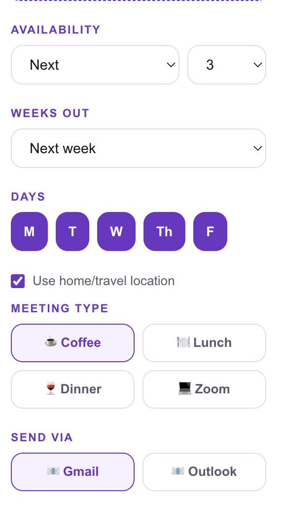
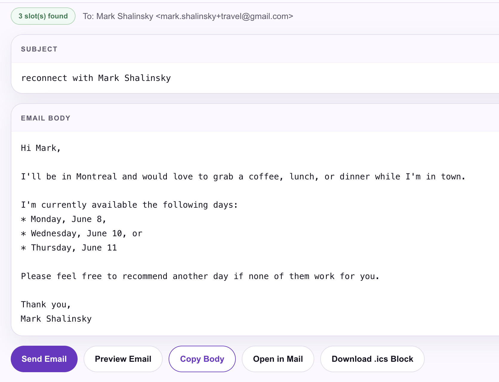
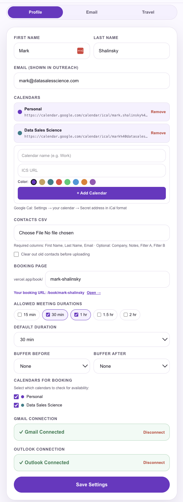
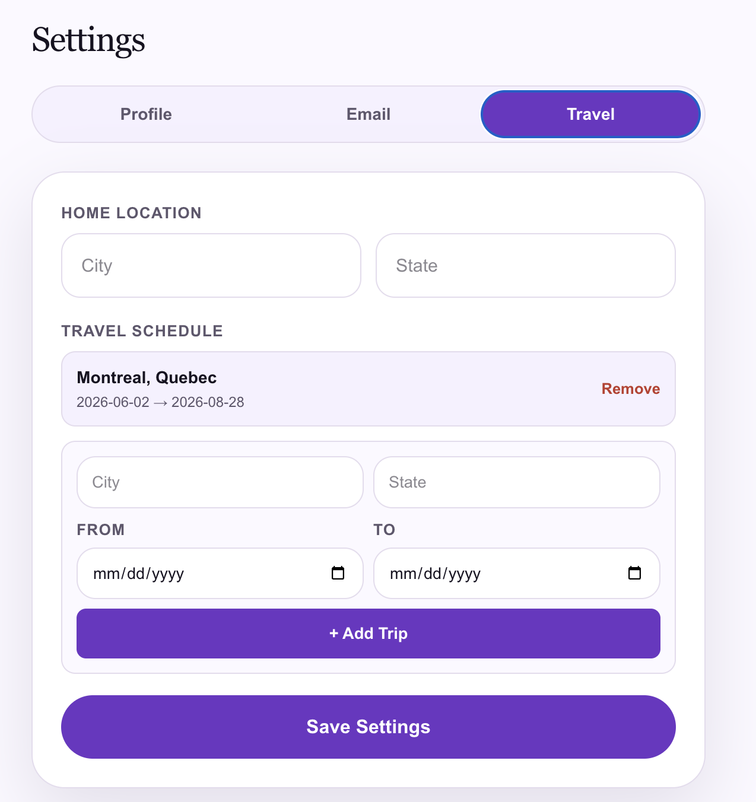
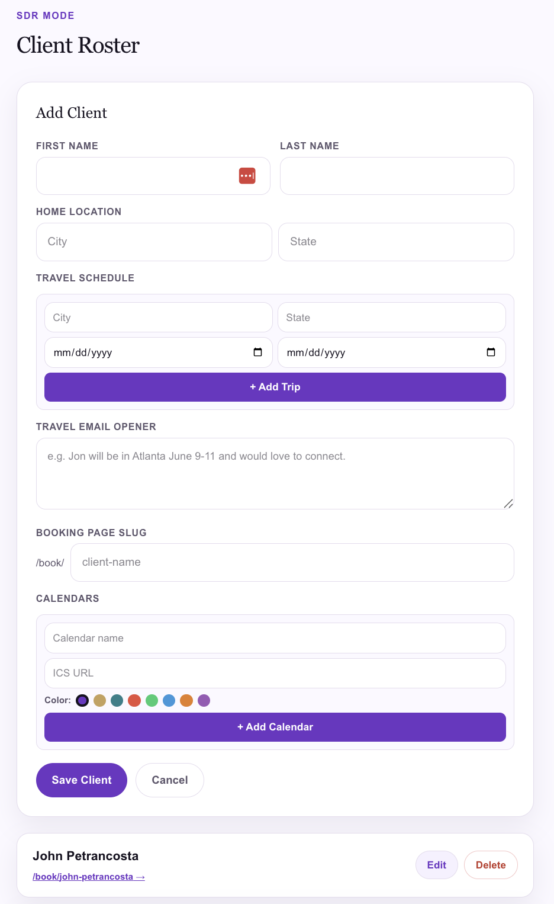
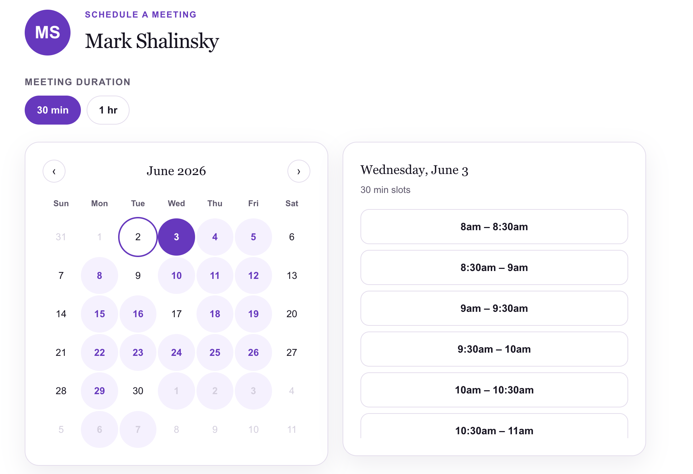

1
Connect your calendars
Add multiple ICS calendars — Personal, Work, or any Google or Outlook calendar. Color-code them, name them, and choose which ones to check for availability.
Send your real availability in a personalized email. Editable, travel-aware, and built for teams where one person schedules for another. Plus booking links when you need them.
Reads your real calendar, builds a personalized email with your open days, and lets you edit before you send.
Add multiple ICS calendars — Personal, Work, or any Google or Outlook calendar. Color-code them, name them, and choose which ones to check for availability.
Pick your days, weeks out, availability mode, and meeting type — Coffee, Lunch, Dinner, or Zoom. Enable home/travel location to tell contacts where you can meet them.
The app reads your live calendar, finds open slots, and writes a personalized email. Edit the subject and body directly before you send — nothing is locked.
Send directly from your connected Gmail or Outlook account. Or copy the body, open in Mail, or download an .ics block.
Every setting in one place.
Availability mode, weeks out, day selector, home/travel location toggle, meeting type (Coffee, Lunch, Dinner, Zoom), and Send via Gmail or Outlook — all on one screen before you generate.


Personalized, editable, ready to send.
Every email is addressed by name, includes your real open days, and reflects your travel location when applicable. Edit the subject and body before sending. Send Email, Preview, Copy Body, Open in Mail, or Download .ics Block — your choice.
Multiple calendars. One setup.
Connect multiple ICS calendars with color coding. Set your booking page slug, allowed meeting durations, buffer times, and which calendars to check. Connect Gmail and Outlook directly. Set once — never again.


I'll be in Montreal. Want to connect?
Set your home location and add trips with date ranges. When travel mode is on, the generated email tells the contact exactly where you'll be and when — so the meeting invitation feels personal, not automated.
Send availability on behalf of anyone.
Add clients to your roster with their own calendars, travel schedules, booking pages, and email openers. Generate availability emails as them — with their open days, their location, their voice.


Inbound covered. Outbound covered.
Every account includes a personal booking page — set your slug, durations (15 min, 30 min, 1 hr, 1.5 hr, 2 hr), buffer times, and which calendars to check. Use the booking link for inbound. Use availability emails for outreach. The right tool for the right moment.
Booking link tools are great — we include one too. But cold and warm outreach is different. Here's how they compare.
| Booking link tools | SendMyAvailability | |
|---|---|---|
| Works for cold outreach | ⚠️ Feels presumptuous | ✓ Sends availability naturally |
| Email feels personal | ✗ Generic link in email | ✓ Named, editable, human |
| Recipient friction | ✗ Must click a link | ✓ Just reply to the email |
| SDR / EA mode | ✗ Not supported | ✓ Built in |
| Editable before sending | ✗ Link is fixed | ✓ Full edit before send |
| Travel / local context | ✗ No location awareness | ✓ Local & travel modes |
| Multiple calendars | ⚠️ Limited | ✓ Unlimited, color-coded |
| Send via Gmail / Outlook | ⚠️ Varies | ✓ Both connected natively |
| Booking links (inbound) | ✓ That's what they do | ✓ Included too |
Send your availability like a person, not a bot.
Free to start. No credit card. Connect your calendar and send your first availability email in under 5 minutes.